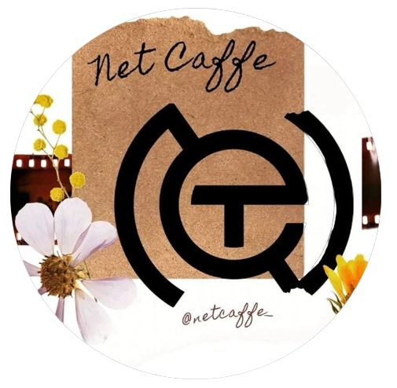

Tentang NET CAFE
________________________________
Didirikan pada 2018. Net Cafe merupakan sebuah startup makanan dan
minuman yang ingin menyajikan high quality untuk para pelanggannya. Cafe
juga merupakan sebuah tempat untuk nongkrong bersama teman, sahabat
bahkan keluarga kadang sekali-sekali cafe dijadikan tempat meeting orang
kerja dikarenakan mempunyai tempat yang santai, nyaman, dan fasilitas
yang lengkap. Nama Net yang diambil dari kata network yang merupakan
harapan kami untuk cafe ini memjadi penghubung orang dengan orang
terdekatnya, menjadi tempat berkumpulnya orang-orang dan bisa menjadi
cafe yang dikenal oleh masyarakat luas. Kami ingin eksistensi kami akan
membuat standar baru untuk cemilan berkualitas untuk pelanggan.

FASILITAS NET CAFE
________________________________

Net Cafe ini berada di Tenggarong Seberang lebih tepatnya di L3 memiliki
fasilitas yang cukup lengkap yang disediakan untuk para pelanggan agar
para pelanggan bisa menikmati saat mereka berada di cafe. Fasilitas yang
disediakan adalah musolah bagi yang beragama islam agar tidak perlu
jauh-jauh jika ingin sholat, stop kontak yang tersedia disetiap meja,
wifi yang kencang agar pelanggan bisa menikmati internet, live musik
yang disediakan owner agar pelanggan tidak jenuh dan pelanggan juga bisa
bernyanyi jika pelanggan menginginkannya, permainan kartu untuk para
pelanggan, dan toilet yang bersih agar pelanggan tidak perlu keluar cafe
untuk buang air.
Media Sosial
________________________________